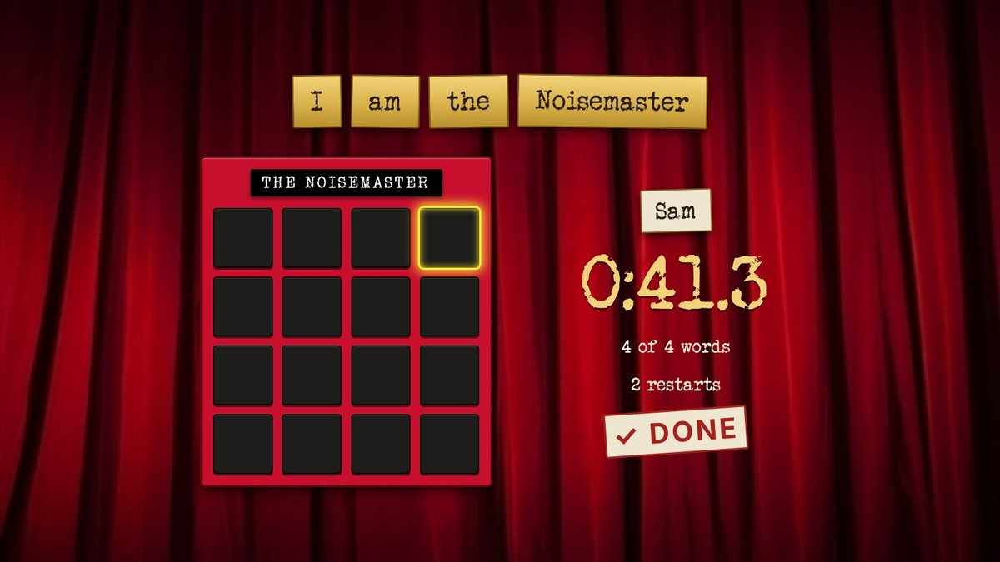
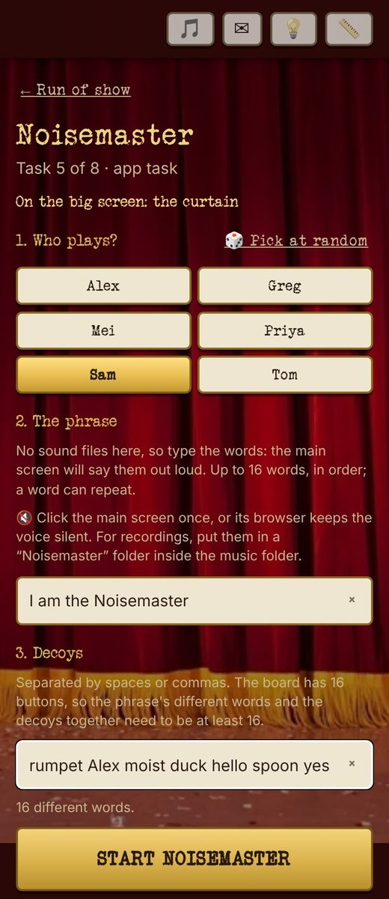
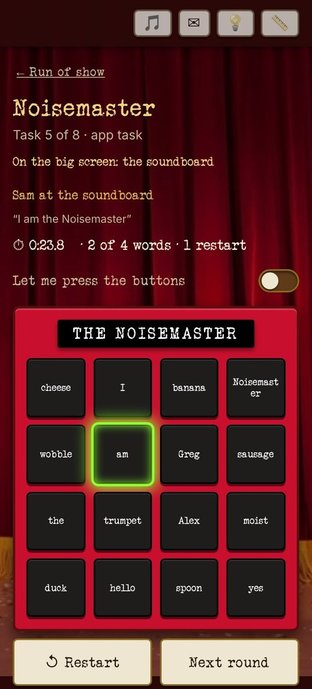

<title>Noisemaster</title>
<meta name="description" content="Noisemaster, an app task for a Taskmaster party: sixteen blank buttons, one phrase, the whole room listening.">
<style>
/* A task page: the brochure's column, frames and labels, telling one task in its own order. Layout: one narrow column on the curtain, like the player phone; each moment is a paper label, a typewriter heading, one line, then the real screens. */
@font-face {
  font-family: "Typewriter";
  src: url("img/veteran_typewriter-webfont.woff2") format("woff2");
  font-display: swap;
}
:root {
  color-scheme: dark;
  --burgundy: #580f0d;
  --burgundy-deep: #2a0807;
  --gold: #d9b24c;
  --gold-bright: #f3d37a;
  --gold-dark: #8a6a1f;
  --paper: #efe6d2;
  --ink: #2b1d12;
  --fg: #f6ecd6;
  --muted: #c9b48f;
  --mat: #1a0f08;
  --typewriter: "Typewriter", "Courier New", monospace;
}
* { box-sizing: border-box; }
body {
  margin: 0;
  color: var(--fg);
  background: var(--burgundy-deep);
  font: 17px/1.5 system-ui, sans-serif;
}
/* the curtain stays put while the page scrolls over it */
body::before {
  content: ""; position: fixed; inset: 0; z-index: -1; pointer-events: none;
  background: linear-gradient(rgba(20, 0, 0, 0.35), rgba(20, 0, 0, 0.6)), url("img/curtains.webp") center / cover no-repeat;
}
main {
  max-width: 980px; margin: 0 auto;
  padding-inline: 16px; padding-block: 3rem 4rem;
  display: grid; gap: 4.5rem;
}
h1, h2 { font-family: var(--typewriter); font-weight: normal; letter-spacing: 0.03em; margin: 0; text-wrap: balance; }

/* ---- opening ---- */
.hero { display: grid; gap: 1.6rem; justify-items: center; text-align: center; }
.eyebrow {
  font-family: var(--typewriter); color: var(--gold-bright); font-size: 1.15rem; letter-spacing: 0.08em;
  text-shadow: 0 2px 0 #0008;
}
.hero h1 {
  color: var(--gold-bright); text-shadow: 0 2px 0 #000a, 0 0 24px #f3d37a33;
  font-size: clamp(2.1rem, 7.5vw, 4rem); line-height: 1.1; max-width: 16ch;
}
.hero p { margin: 0; max-width: 34ch; color: var(--fg); font-size: 1.1rem; }

/* the gold picture frame, same 9-slice as the stage */
.frame {
  --bw: clamp(14px, 3vw, 30px);
  border: var(--bw) solid transparent;
  border-image: url("img/frame.png") 100 / var(--bw) round;
  background: var(--mat); background-clip: padding-box;
  filter: drop-shadow(0 14px 22px rgba(0, 0, 0, 0.7));
  line-height: 0; width: 100%; max-width: 860px;
}
.frame img { width: 100%; height: auto; display: block; }
.caption {
  font-family: var(--typewriter); font-size: 0.95rem; color: var(--ink);
  background: var(--paper); border: 2px solid var(--gold-dark); padding: 0.2rem 0.9rem;
  box-shadow: 0 3px 8px #000a;
}
.hero figure { margin: 0; display: grid; justify-items: center; gap: 0.9rem; width: 100%; }

/* ---- a moment ---- */
.moment { display: grid; gap: 1.4rem; }
.moment header { display: grid; gap: 0.7rem; max-width: 40rem; }
.step {
  justify-self: start; font-family: var(--typewriter); color: var(--burgundy);
  background: var(--paper); border: 2px solid var(--gold-dark); border-radius: 3px;
  padding: 0.1rem 0.7rem; text-transform: uppercase; letter-spacing: 0.1em; font-size: 0.85rem;
  transform: rotate(-1.5deg); box-shadow: 0 3px 0 #0006;
}
.moment h2 { color: var(--gold-bright); font-size: clamp(1.7rem, 5.5vw, 2.5rem); line-height: 1.15; text-shadow: 0 2px 0 #000a; }
.moment header p { margin: 0; max-width: 36rem; }

/* phones: a swipeable strip on a phone, a row on a wider screen */
.phones {
  display: grid; grid-auto-flow: column; grid-auto-columns: min(62vw, 250px);
  gap: 1.1rem; justify-content: start;
  overflow-x: auto; scroll-snap-type: x mandatory; scrollbar-width: none;
  margin-inline: -16px; padding-inline: 16px; padding-block: 0.4rem 0.8rem;
}
.phones::-webkit-scrollbar { display: none; }
@media (min-width: 820px) { .phones { justify-content: center; margin-inline: 0; overflow: visible; } }
.phones figure { margin: 0; display: grid; gap: 0.7rem; justify-items: center; scroll-snap-align: center; }
.phone {
  width: 100%; border-radius: 26px; padding: 7px; line-height: 0;
  background: #120806; border: 1px solid #ffffff22;
  box-shadow: 0 16px 28px rgba(0, 0, 0, 0.6);
}
.phone img { width: 100%; height: auto; border-radius: 20px; display: block; }
.phones figure:nth-child(1) .phone { transform: rotate(-1deg); }
.phones figure:nth-child(2) .phone { transform: rotate(0.8deg); }
.phones figure:nth-child(3) .phone { transform: rotate(-0.4deg); }
.swipe { font-family: var(--typewriter); color: var(--muted); font-size: 0.9rem; margin: -0.6rem 0 0; }
@media (min-width: 820px) { .swipe { display: none; } }

@media (prefers-reduced-motion: no-preference) {
  .hero .frame { animation: hang 0.7s cubic-bezier(0.2, 0.9, 0.3, 1.15) both; }
}
@keyframes hang { from { transform: translateY(-14px) rotate(-1deg); } to { transform: none; } }

/* tasks: each one an index card under its screen, scattered a little like the game picker */
.tasks { list-style: none; margin: 0; padding: 0; display: grid; gap: 2.2rem; grid-template-columns: 1fr; }
@media (min-width: 760px) { .tasks { grid-template-columns: minmax(0, 24rem); justify-content: center; } }
/* the prize photo already hangs in its own gold frame, so the TV is shown plain, not framed twice */
.tv-plain { width: 100%; max-width: 860px; height: auto; display: block; border: 3px solid var(--gold); border-radius: 4px; box-shadow: 0 14px 22px rgba(0, 0, 0, 0.7); }
/* a task shown whole: its TV, then the guest's phone and the host's */
.task-set { display: grid; gap: 1rem; }
.task-set h3 { margin: 0; font-family: var(--typewriter); font-weight: normal; color: var(--gold-bright); font-size: 1.6rem; text-shadow: 0 2px 0 #000a; }
.task-set > p { margin: 0; max-width: 36rem; }
.task-set .phones { align-items: start; }
.task { display: grid; gap: 0; min-width: 0; transform: rotate(var(--tilt)); }
.task:nth-child(1) { --tilt: -0.8deg; }
.task:nth-child(2) { --tilt: 0.7deg; }
.task:nth-child(3) { --tilt: -0.3deg; }
.task img {
  width: 100%; height: auto; display: block; aspect-ratio: 4 / 3;
  border: 3px solid var(--gold); border-bottom: 0; border-radius: 4px 4px 0 0;
}
.card {
  background: var(--paper); color: var(--ink); border: 2px solid var(--gold-dark); border-radius: 0 0 3px 3px;
  padding: 0.8rem 1rem 1rem; display: grid; gap: 0.5rem;
  /* faint ruled lines, like a 3x5 index card */
  background-image: repeating-linear-gradient(transparent 0 1.55rem, #580f0d14 1.55rem calc(1.55rem + 1px));
  background-position: 0 2.9rem;
  box-shadow: 0 10px 18px rgba(0, 0, 0, 0.55);
}
.card h3 {
  margin: 0; font-family: var(--typewriter); font-weight: normal; color: var(--burgundy); font-size: 1.35rem;
  padding-bottom: 0.35rem; border-bottom: 2px solid var(--burgundy);
}
.card p { margin: 0; font-size: 0.98rem; line-height: 1.55rem; }

/* a TV screen inside a moment: the same frame and placard as the opening */
.tv { margin: 0; display: grid; justify-items: center; gap: 0.9rem; width: 100%; }

/* ---- sign-off ---- */
.signoff { display: grid; gap: 0.8rem; justify-items: center; text-align: center; padding-block: 1rem 0; }
.signoff h2 { color: var(--gold-bright); font-size: clamp(2rem, 7vw, 3.2rem); text-shadow: 0 2px 0 #000a, 0 0 24px #f3d37a33; }
.signoff p { margin: 0; max-width: 32ch; color: var(--muted); }
/* ---- task page ---- */
/* the at-a-glance card, the brochure's index card turned into four ruled facts */
.glance { width: 100%; max-width: 30rem; transform: rotate(-0.6deg); text-align: left; }
.glance dl { margin: 0; display: grid; grid-template-columns: auto 1fr; column-gap: 1rem; }
.glance dt { font-family: var(--typewriter); color: var(--burgundy); text-transform: uppercase; letter-spacing: 0.08em; font-size: 0.85rem; line-height: 1.55rem; }
.glance dd { margin: 0; font-size: 0.98rem; line-height: 1.55rem; }
.glance dd small { color: #6b5a44; }
.back { font-family: var(--typewriter); color: var(--muted); font-size: 0.9rem; text-decoration: none; justify-self: start; }
.task-page .hero h1 { max-width: none; }
.phones.pair { align-items: start; }
.phones.pair.one { grid-template-columns: minmax(0, 250px); }
/* two phones always fit the column, side by side, no swipe */
.phones.pair { grid-auto-flow: row; grid-template-columns: repeat(2, minmax(0, 250px)); grid-auto-columns: auto; justify-content: center; overflow: visible; margin-inline: 0; padding-inline: 0; gap: 0.8rem; }
.phones.pair .phone { border-radius: 18px; padding: 5px; }
.phones.pair .phone img { border-radius: 14px; }
.phones.pair .caption { font-size: 0.8rem; text-align: center; padding: 0.2rem 0.5rem; }
/* the way on to the other task pages, as two paper tags like the step labels */
.more { display: flex; flex-wrap: wrap; gap: 0.8rem; justify-content: center; margin-top: 0.6rem; }
.more a {
  font-family: var(--typewriter); color: var(--burgundy); text-decoration: none;
  background: var(--paper); border: 2px solid var(--gold-dark); border-radius: 3px;
  padding: 0.3rem 0.8rem; box-shadow: 0 3px 0 #0006; font-size: 0.95rem;
}
.more a:nth-child(1) { transform: rotate(-1deg); }
.more a:nth-child(2) { transform: rotate(0.8deg); }
</style>
<main class="task-page">
  <a class="back" href="index.html">← Taskmaster Party</a>
  <section class="hero">
    <div class="eyebrow">Taskmaster · an app task</div>
    <h1>Noisemaster</h1>
    <p>Sixteen blank buttons on one guest's phone. The room watches the TV while they work out which button says what.</p>
    <figure>
      <div class="frame"></div>
      <figcaption class="caption">On the TV: Sam is two words in</figcaption>
    </figure>
    <div class="card glance">
      <h3>At a glance</h3>
      <dl>
        <dt>Who plays</dt><dd>One guest at a time. Everyone else watches the TV.</dd>
        <dt>How long</dt><dd>About 2 minutes a guest</dd>
        <dt>Your prep</dt><dd>Pick a phrase and some decoys.</dd>
        <dt>To bring</dt><dd>Nothing. A folder of word sounds is optional; without it the TV reads the words out.</dd>
        <dt>Winner</dt><dd>Fastest time.</dd>
      </dl>
    </div>
  </section>

  <section class="moment" id="turn">
    <header>
      <span class="step">1 · The turn</span>
      <h2>Find the words by ear.</h2>
      <p>One guest at a time gets the phrase and sixteen blank buttons. Each button says one word on the TV, and nobody tells them which. They press the phrase in order, as fast as they can.</p>
    </header>
    <div class="phones pair one">
      <figure>
        <div class="phone"></div>
        <figcaption class="caption">Sam's phone: blank buttons</figcaption>
      </figure>
    </div>
  </section>

  <section class="moment" id="tv">
    <header>
      <span class="step">2 · On the TV</span>
      <h2>The whole room hears every wrong word.</h2>
      <p>Each press plays out loud. A wrong one knocks the words off and the phrase starts again, so the room groans along until the last word lands and the clock stops.</p>
    </header>
    <figure class="tv">
      <div class="frame"></div>
      <figcaption class="caption">Sam: 41.3 seconds, 2 restarts</figcaption>
    </figure>
  </section>

  <section class="moment" id="host">
    <header>
      <span class="step">3 · The host</span>
      <h2>Type a phrase. Watch them squirm.</h2>
      <p>Before a go, pick who's up and type the phrase and a few decoy words. During it, your phone shows every word on the board, so you know exactly how close they are.</p>
    </header>
    <div class="phones pair">
      <figure>
        <div class="phone"></div>
        <figcaption class="caption">Before: type the phrase</figcaption>
      </figure>
      <figure>
        <div class="phone"></div>
        <figcaption class="caption">During: every word</figcaption>
      </figure>
    </div>
  </section>

  <section class="signoff">
    <p>All you need is a phrase, a dozen decoys and a guest who thinks they've got a good ear.</p>
    <h2>Your time starts now.</h2>
    <nav class="more">
      <a href="tasks.html">← All the tasks</a>
      <a href="secret-tasks.html">Next: Secret Tasks →</a>
    </nav>
  </section>
</main>
